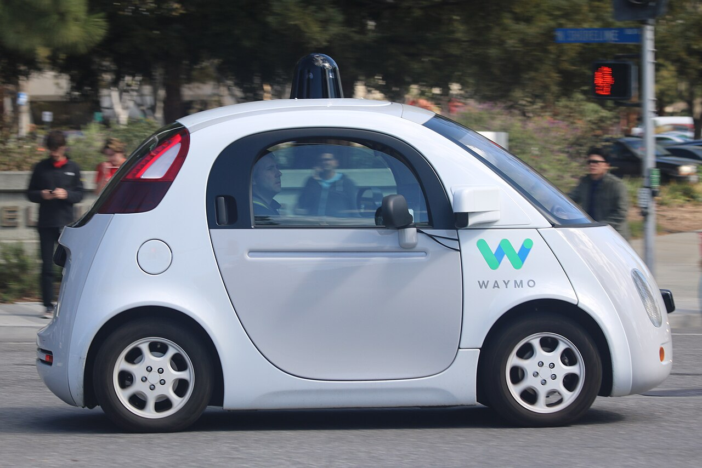
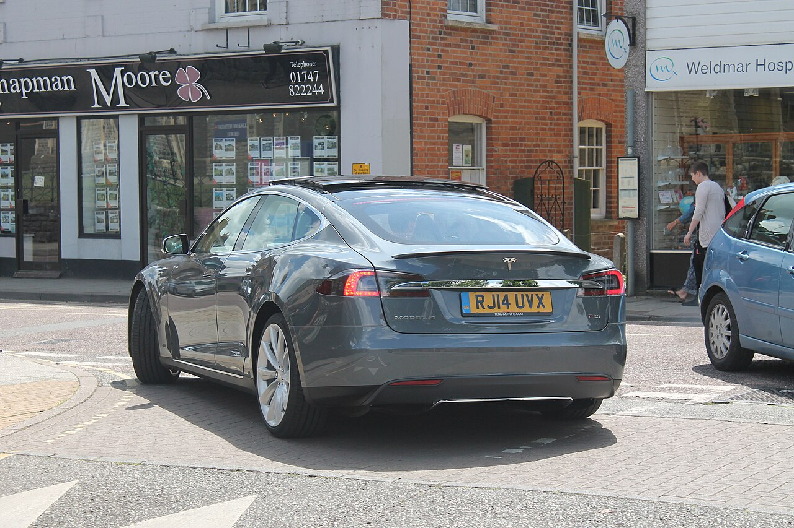
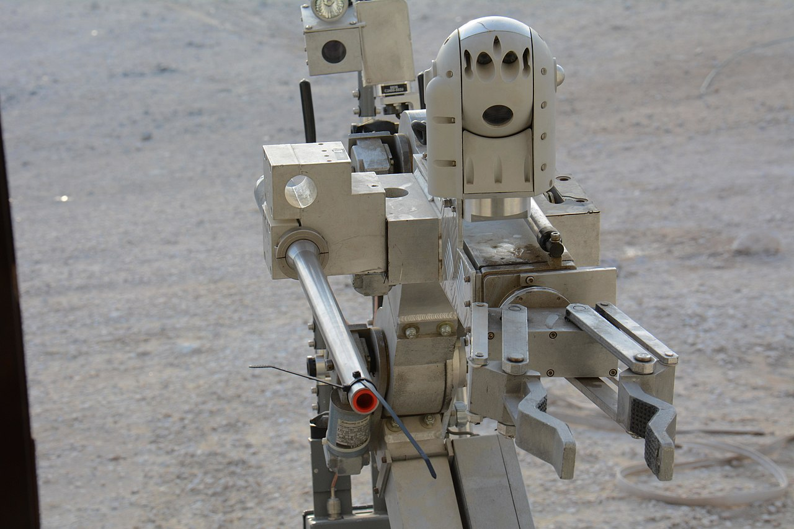
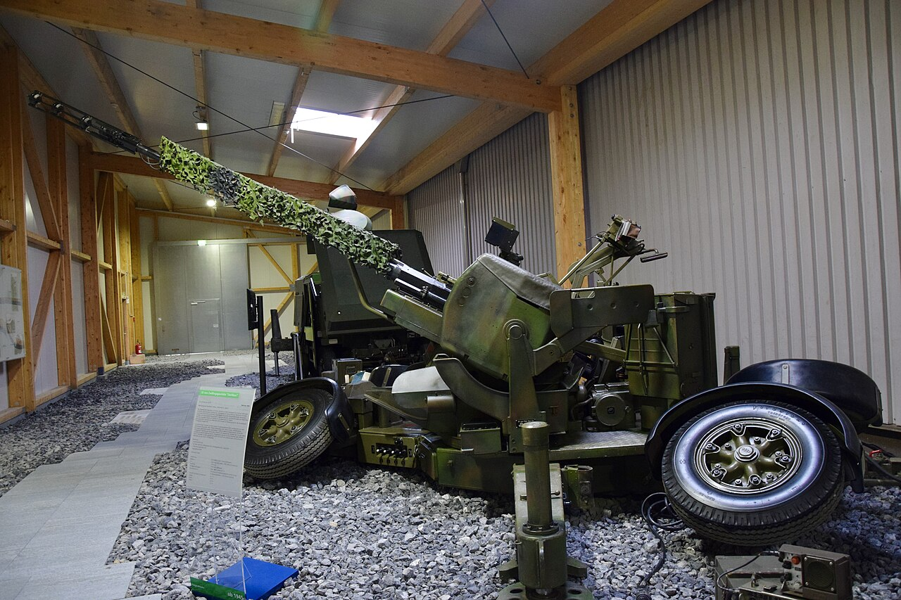
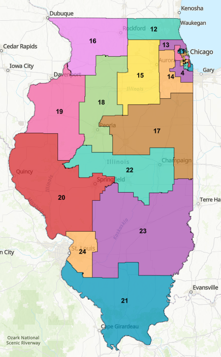
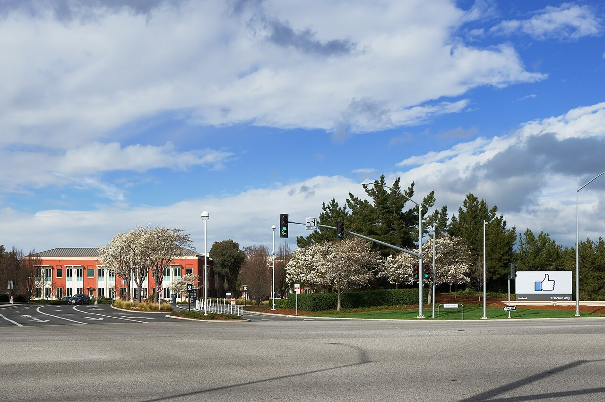
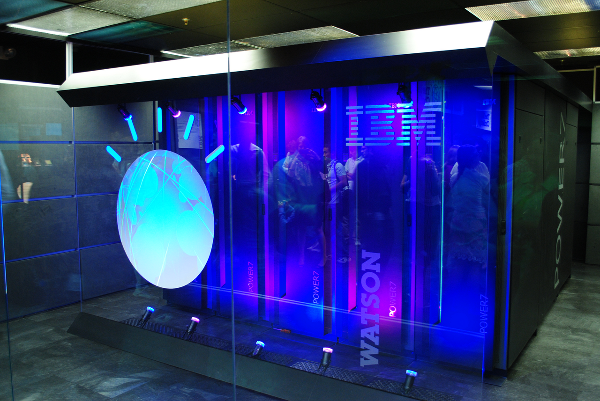
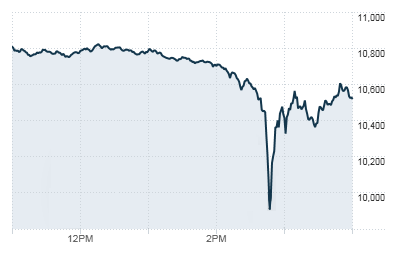
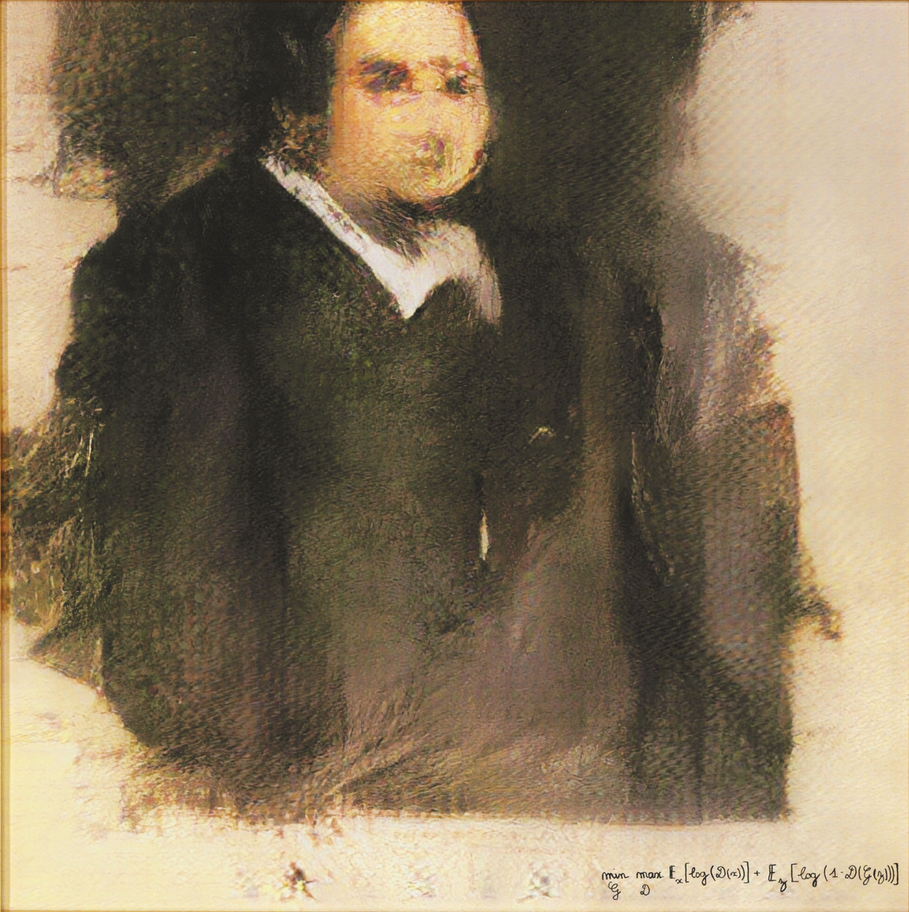
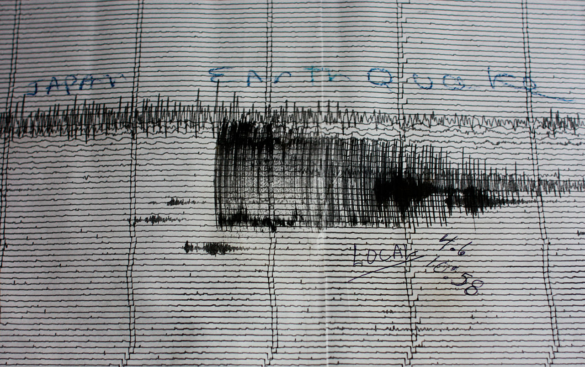

Good newsref 1
A blind driver gains independence
Steve Mahan, who is blind, rides his autonomous car around Santa Clara, California — sometimes alone, by himself.
YouTubeVisual companion · Introduction
and How We Get There
“Is the glass half empty or half full?”
Our answer is: both.
There is bad news that gives us reason to worry about some uses of AI, and good news that gives us reason to advocate for others — sometimes for the very same AI technique.
Eleven everyday domains, each carrying good news and bad news — sometimes from the very same technique.

Good newsref 1
Steve Mahan, who is blind, rides his autonomous car around Santa Clara, California — sometimes alone, by himself.
YouTube
Bad newsref 2
Joshua Brown was killed in May 2016 when his Tesla Model S on Autopilot drove into a white truck it could not distinguish from the bright sky.
New Scientist (Alice Klein) · 1 July 2016
Good newsref 3
An AI-augmented bomb-disposal robot reaches tight spots and defuses or detonates deadly devices without humans risking their lives.
BBC Future · 14 July 2016
Bad newsref 4
In Lohatlha, South Africa, an Oerlikon GDF-005 anti-aircraft gun directed by AI went out of control and sprayed cannon shells, killing nine and wounding 14.
Wired (Noah Shachtman) · 18 October 2007
Good newsref 5
AI can draw congressional districts in North Carolina that are fair to both political parties and to various interest groups.
Duke University
Bad newsref 6
Cambridge Analytica used AI trained on the personal data of up to 87 million Facebook users — without their knowledge — to try to influence the 2016 US presidential election.
Fortune; Hu, 'Cambridge Analytica's black box', Big Data & Society (2020) · 10 April 2018Good newsref 7
ThoughtRiver built an AI that reads legal contracts, answers key questions and suggests next steps — for a far smaller fee than human lawyers charge.
thoughtriver.comBad newsref 8
Eric Loomis was sentenced to six years partly because a proprietary AI risk assessment labelled him a 'high risk to the community'. No one could see how it decided; critics argue it is biased by race and gender.
cert. denied, 137 S.Ct. 2290 (2017) · 2016
Good newsref 9
In 2015 IBM's Watson diagnosed a rare leukaemia that human doctors couldn't pinpoint at first. Doctors said Watson's speed was crucial for a fast-progressing disease.
Asian Scientist · 2016Bad newsref 10
Bias in training data led a widely used 'high-risk care' algorithm to prioritize White patients over Black patients who were equally ill.
Obermeyer et al., Science 366(6464) · 2019Good newsref 11
Robo-advisers such as Betterment, Wealthfront and Wealthsimple claim to be at least as accurate as human advisers, with low minimums that open financial advice to lower-income investors.
Moral AI, Introduction note 11
Bad newsref 12
On 6 May 2010 at 2:45 pm the Dow Jones Industrial Average dropped 998.5 points in minutes as AI-driven trading systems spiralled into high-speed automated selling.
Wikipedia · 6 May 2010Good newsref 13
The 'Have You Heard?' (HYH) project used AI to raise HIV testing among homeless youth by 25%, by finding the young people most influential in their social networks.
USC Center for AI in Society (CAIS)Bad newsref 14
In 2012 a Target store mailed baby coupons to a 16-year-old because its AI predicted, from her buying patterns, that she was pregnant — before she had told her father.
Forbes (Kashmir Hill) · 16 February 2012Good newsref 15
Pandora and Spotify use AI analyses of musical taste to recommend new songs and artists listeners enjoy and might never have discovered otherwise.
CNN · 24 December 2020
Bad newsref 16
AI-made art has sold for as much as $432,500 — but the AI could do it only by training on human artists' images, used without permission, credit or pay, and hard to make it 'forget'.
Christie's · 2018
Good newsref 17
The Los Angeles Times uses an algorithm called Quakebot to warn readers about California earthquakes more quickly and accurately than traditional reporting.
Los Angeles Times · 17 May 2019Bad newsref 18
In 2023 Turkish presidential candidate Muharrem İnce withdrew after a sex video he called a 'deepfake' spread on Facebook; a fake video also tied a rival, Kemal Kılıçdaroğlu, to a terrorist group.
Wired · 2023Good newsref 19
AI helps locate poachers in India and Africa — even predicting poaching before it happens — and game-theoretic AI optimizes ranger patrol routes to intercept snares.
BBC Earth (Zoe Cormier)Bad newsref 20
China is reported to use a vast facial-recognition system to track and control the Uighurs, a largely Muslim minority — 500,000 face scans in a single month.
The New York Times (Paul Mozur) · 14 April 2019Good newsref 22
Blue River Technology uses AI camera vision to tell crops from weeds and deliver herbicide only to the weeds — helping avoid resistance and saving cotton growers money.
TechRepublic (Natalie Gagliardi) · December 2018
Bad newsref 23
Training many high-performing AI models takes enormous compute. One estimate: training a single AI model can emit as much carbon as five cars do across their entire lifetimes.
MIT Technology Review (Karen Hao) · 6 June 2019The Introduction’s hard figures, each in its own context. Different units — shown for scale, never as a ranking.
used by Cambridge Analytica without consent to try to sway the 2016 US election
ref 6the 6 May 2010 'Flash Crash' driven by AI high-speed selling
ref 12sold at auction; the model trained on artists' work without consent
ref 16the 'Have You Heard?' project found socially influential young people
ref 13an AI-directed Oerlikon GDF-005 anti-aircraft gun, Lohatlha, South Africa
ref 4Eric Loomis, scored 'high risk' by a proprietary algorithm
ref 8an estimate of the emissions of training a single large AI model
ref 23// different units — shown for scale of the stakes, never as a single ranking
autonomous cars and weapons, deepfakes, social media, robot surgeons, and future AI that could make us lose control.
risk scores keyed to race, wealth and gender; bias in healthcare; robo-advisers; inequality from AI job losses.
Cambridge Analytica; Target's pregnancy-prediction coupons; Chinese surveillance of the Uighurs.
aiding blind people like Steve Mahan; impeding movement or religious practice through targeted surveillance.
Eric Loomis; AI that grades job performance, résumés, loan creditworthiness and student papers.
deepfakes and AI-generated fake news used to interfere in elections.
“Some AI uses implicate more than one value, and this list is not meant to be exhaustive.”
The dangers of AI should not be underestimated, but they also should not be overestimated. Typically, AI can be built and used safely and ethically as long as these moral issues are addressed thoughtfully.
“To keep the AI baby without its bathwater, we will try to illuminate the moral issues at stake — and show why we all need to pay more attention to AI ethics.”
The sources the authors cite in the Introduction (notes 1–23). The book reports these cases; we link what it cites.
Freely-licensed photographs (Wikimedia Commons). Unless noted, they illustrate the domain rather than the exact event.